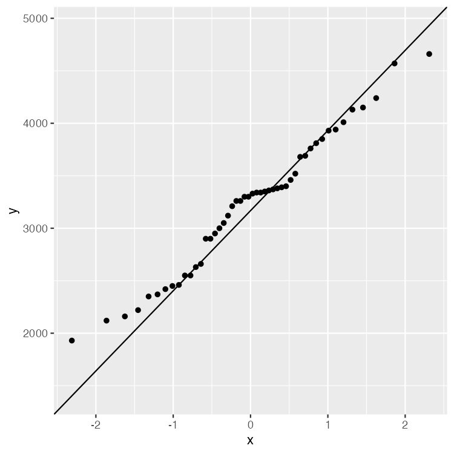
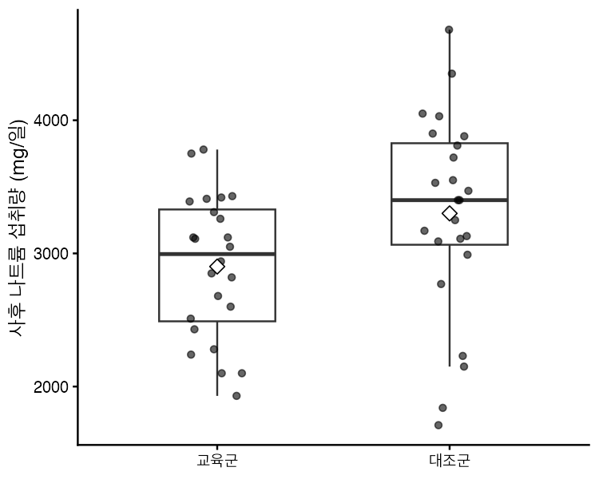
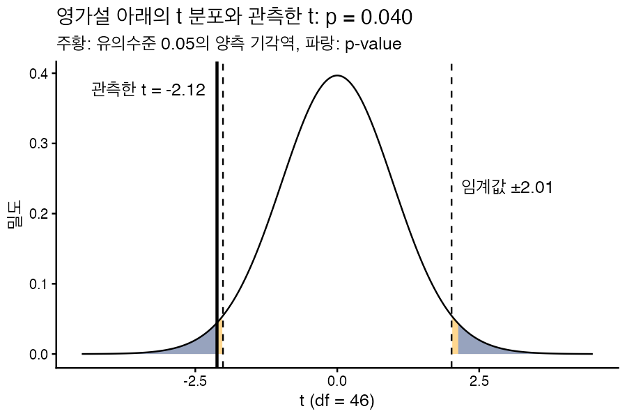

모집단 평균에 대한 가설검정
VS Code에서 R 스크립트를 한 줄씩 실행하며, 정규성 가정을 확인한 뒤 세 가지 t 검정을 해 본다. R이 내놓는 t, 자유도, p-value가 영가설 아래의 분포에서 어디에 놓이는지 그림으로 확인하고, 효과크기까지 구한다. 절마다 코딩 에이전트에게 전달할 프롬프트를 먼저 두고, 그 뒤에 제공한 코드와 확인할 것을 두었으니, 프롬프트로 만든 결과를 대조해 본다.
- 도구
- R과 tidyverse, VS Code. 설치는 VS Code에서 R 실행하기에, 폴더를 열고 스크립트를 실행하는 방법은 데이터 준비 자료에 있다.
- 예제 데이터
- 식생활 교육 연구를 흉내 낸 연습용 가상 데이터. 48명의 교육 전·후 나트륨 섭취량(mg/일). 데이터 준비 자료에서 읽고 다듬은 것을 쓴다.
- 다루는 검정
- 단일표본, 독립표본(등분산 검정 뒤 Student 또는 Welch), 대응표본 t 검정
- 함수 도움말
- 코드에서 점선 밑줄이 있는 함수 이름에 마우스를 올리면(휴대폰은 누르면) 목적, 인수, 반환값이 나타난다.
- 효과크기
- Cohen의 d, Hedges의 g, \(d_z\)
- 가정
- t 검정의 정규성 가정은 이 자료 전체에서 만족된다고 보고 진행한다. 확인하는 방법(QQ 그림, Shapiro-Wilk 검정)은 02절에서 한 번 보인다.
시작하기 전에. 이 자료의 코드는 데이터 준비 자료에서 만든 스크립트 scripts/03.ttest.R에 이어서 적는다. 그 스크립트에서 만든 데이터 d(이름표를 붙인 48명), edu(교육군 24명)와 그림 p2, p3를 그대로 쓴다. R을 새로 켰다면 03.ttest.R을 처음부터 다시 실행한 뒤 시작한다.
검정의 논리: \(H_0\) 아래의 분포와 p-value
세 가지 t 검정은 계산하는 재료만 다르고 논리는 같다. 이 문서에서는 영가설(귀무가설이라고도 한다)과 대안가설(대립가설이라고도 한다)이라는 용어를 쓴다.
- 영가설 \(H_0\)와 대안가설 \(H_1\)을 세운다. \(H_1\)의 방향(양측, 한쪽)은 데이터를 보기 전에 정한다.
- 표본에서 검정통계량을 구한다. 관측한 값이 영가설의 값에서 표준오차의 몇 배만큼 떨어져 있는지를 잰 것이다.
- \(H_0\)가 참이라면 이 통계량은 자유도 df인 t 분포를 따른다. 이 분포가 판단의 기준이 된다.
- p-value는 이 분포에서 관측한 t만큼, 또는 그보다 더 극단적인 값이 나올 확률이다. p-value가 유의수준 \(\alpha\)보다 작으면 \(H_0\)를 기각한다.
아래에서 t와 자유도를 직접 움직여 본다. 파란 넓이가 p-value이고, 축 위의 주황 띠가 유의수준 \(\alpha\)로 정한 기각역이다. 관측한 t가 주황 띠 안에 들어가는 것과 \(p < \alpha\)는 같은 말이다.
p-value는 \(H_0\)가 참일 확률이 아니다. \(H_0\)가 참이라고 가정했을 때 이런 데이터가 나올 확률이다. 또 p-value는 차이가 얼마나 큰지 말해 주지 않는다. 표본이 크면 작은 차이도 유의하게 나온다. 그래서 효과크기를 함께 보고한다(Wasserstein & Lazar, 2016).
정규성 가정 확인
t 검정은 자료가 정규분포를 따르는 모집단에서 나왔다고 가정한다. 단일표본 검정은 자료 자체, 독립표본 검정은 집단마다의 자료, 대응표본 검정은 사전·사후의 차이가 그 대상이다. 검정에 들어가기 전에 이 가정을 어떻게 확인하는지 사전 나트륨 섭취량 48명으로 한 번 해 본다. 그림(QQ 그림)으로 모양을 보고, 검정(Shapiro-Wilk)으로 숫자를 본다.
프롬프트의 구성요소와 쓰는 순서
이 자료는 절마다 코딩 에이전트에게 맡기는 프롬프트를 먼저 두고, 그 뒤에 비교할 R 코드와 확인할 것을 둔다. 프롬프트에는 함수 이름이나 계산식을 적지 않고 무엇을 어떤 기준으로 보고 싶은지를 말로 적는다. 그래서 코드를 몰라도 쓸 수 있다.
| 구성요소 | 적는 것 | 왜 적나 |
|---|---|---|
| 이어 쓸 곳 | 어느 스크립트에 이어서 할지 | 앞에서 만든 자료를 다시 읽거나 새 파일을 만들지 않게 한다 |
| 할 일 | 어떤 질문을 어떤 검정으로 볼지 | 분석의 범위를 정한다 |
| 세부 조건 | 양측 여부, 신뢰수준, 저장할 파일, 판단 규칙 | 에이전트가 임의로 정하지 않게 한다 |
| 설명 요구 | 결과에서 짚어 줄 값과 그 뜻 | 출력을 그대로 받지 않고 읽는 법까지 받는다 |
| 제약 | 하지 않을 일, 설치 전 허락 | 요청하지 않은 변경을 막는다 |
코드는 달라도 된다. 생성한 코드는 실행할 때마다, 에이전트마다 다를 수 있다. 변수 이름, 함수 선택, 줄 수가 달라도 틀린 것이 아니다. 판단의 기준은 코드의 모양이 아니라 확인 항목과 결과의 숫자다. 코드가 낯설면 에이전트에게 "어느 줄이 어떤 분석인지 설명해 줘"라고 묻는다.
이 프롬프트의 구성. 이어 쓸 곳: 03.ttest.R. 할 일: 정규성 확인. 세부 조건: QQ 그림과 Shapiro-Wilk 검정. 설명 요구: 그림의 모양 읽기. 제약: 결론을 쓰는 방식.
scripts/03.ttest.R 에 이어서, 사전 나트륨 섭취량(sodium_pre)이 정규분포를 따른다고 볼 수 있는지 확인해 줘. - 자료를 정규분포와 비교하는 QQ 그림을 점과 기준선으로 그리고, output/qq_sodium_pre.png 로 저장한다. - Shapiro-Wilk 검정을 하고 통계량 W 와 p-value 를 보여 준다. - QQ 그림에서 점이 직선에서 벗어난 곳이 있는지, 그 모양이 무엇을 뜻하는지 한 문단으로 설명해 줘. - 결론은 "정규성 가정을 기각할 증거가 있는가"로만 말하고, 정규분포임을 증명했다고 쓰지 않는다.
x <- d %>% pull(sodium_pre) # 열 하나를 벡터로 꺼낸다. 03절의 검정에서도 이 x를 쓴다
# 그림: 점들이 직선을 따라가는지 본다
p_qq <- ggplot(d, aes(sample = sodium_pre)) +
stat_qq() +
stat_qq_line()
p_qq
ggsave("output/qq_sodium_pre.png", p_qq, width = 5, height = 5, dpi = 300)
# 검정: 영가설은 "자료가 정규분포에서 나왔다"
shapiro.test(x)제공한 코드와 비교해 확인할 것. 생성한 코드는 달라도 된다. 아래 항목과 결과의 숫자가 맞으면 된다.
- W = 0.977, p-value = 0.47이 나오는가.
- 그림 파일이
output/qq_sodium_pre.png에 저장되었는가. - 결론이 "기각할 증거가 없다"이고, "정규분포임을 증명했다"고 쓰지 않았는가.
QQ 그림은 무엇을 보나
QQ 그림(quantile-quantile plot)은 이 가정을 눈으로 확인하는 도구다. 자료를 작은 값부터 늘어놓고, 각 값(세로축)을 "자료가 정규분포라면 그 순서의 값이 놓일 자리"인 표준정규분포의 분위수(가로축)와 짝지어 찍은 것이다. stat_qq_line()이 긋는 직선은 자료의 1사분위수와 3사분위수를 지나는 선으로, 자료가 정규분포를 따르면 점들이 이 직선 위에 놓인다. 직선에서 벗어나는 모양이 어긋남의 종류를 알려 준다.
- 양 끝이 직선 바깥으로 휨(왼쪽 아래 점은 선 아래, 오른쪽 위 점은 선 위): 정규분포보다 꼬리가 두껍다. 극단값이 더 자주 나온다.
- 양 끝이 직선 안쪽으로 들어옴: 꼬리가 가볍다. 극단값이 정규분포보다 적다.
- 한쪽 끝만 휨: 분포가 한쪽으로 치우쳐 있다(왜도).
- 가운데에 평평한 계단: 같은 값이 여럿이다. 측정 단위가 거칠거나 값이 특정 구간에 몰려 있을 때 나타난다.

p_qq를 R에서 실행해 저장한 그림. 가로축이 표준정규분포의 분위수, 세로축이 사전 섭취량(mg/일)이다.결과 읽기. 48명의 점이 대체로 직선을 따라간다. 가운데 3300~3400 mg 구간이 평평한 것은 그 값대에 여러 명이 몰려 있어서다. 가장 작은 값(1930)은 직선 위에, 가장 큰 값들(4240~4660)은 직선 아래에 있어 양 끝이 안쪽으로 조금 들어와 있다. 정규분포보다 꼬리가 약간 가볍다는 뜻이지, 뚜렷한 치우침이나 동떨어진 값은 없다. 뒤이은 Shapiro-Wilk 검정도 같은 결론이다. 영가설 "자료가 정규분포에서 나왔다"를 기각할 증거가 없다.
Shapiro-Wilk normality test data: x W = 0.97725, p-value = 0.47
이 자료에서의 가정. 여기서는 정규성 가정을 확인하는 방법을 한 번 보였다. 이후의 검정(독립표본은 집단마다의 자료, 대응표본은 사전·사후의 차이)에서도 같은 방법으로 확인할 수 있지만, 이 자료에서는 모든 검정에서 정규성 가정이 만족된다고 보고 진행한다. 그래서 뒤의 코드와 프롬프트에는 정규성 확인이 다시 나오지 않는다. 두 가지를 기억해 둔다. 첫째, 정규성 검정에서 영가설을 기각하지 못한 것은 정규분포라는 증명이 아니다. 표본이 작으면 어긋남을 잘 잡아내지 못하고, 표본이 크면 사소한 어긋남도 유의하게 나오므로 그림을 함께 본다. 둘째, 표본이 어느 정도 크면 평균의 표집분포는 정규분포에 가까워져 t 검정이 정규성에서 조금 벗어나도 견딘다. 자료가 정규성에서 크게 벗어날 때 쓰는 변환이나 비모수 검정(Wilcoxon 검정 등)은 이 자료의 범위 밖이다.
단일표본 t 검정
질문. 참여자 48명의 사전 나트륨 섭취량 평균은 기준값과 다른가? 선행 조사에서 보고된 성인 평균이 3000 mg이라고 하고, 이 값을 기준으로 삼는다.
이 프롬프트의 구성. 이어 쓸 곳: 03.ttest.R. 할 일: 단일표본 t 검정. 세부 조건: 기준값, 양측, 신뢰수준. 설명 요구: 결과의 각 값이 뜻하는 것. 제약: 다른 검정은 아직 하지 않기.
scripts/03.ttest.R 에 이어서, 사전 나트륨 섭취량의 평균이 기준값 3000 mg 과 다른지 단일표본 t 검정을 해 줘. - 양측 검정, 신뢰수준 95%로 하고 결과를 출력한다. 결과는 뒤에서 다시 쓸 수 있게 남겨 둔다. - 출력에서 t, 자유도, p-value, 95% 신뢰구간, 표본 평균을 짚어 주고, 각각이 무엇을 뜻하는지 한 줄씩 설명해 줘. - 결과를 한 행짜리 표로도 보여 준다. - 다른 검정은 아직 하지 않는다.
# 정규성은 02절에서 확인했다. x는 그때 꺼낸 사전 섭취량 벡터다 res1 <- t.test(x, mu = 3000) # 기본값은 양측, 신뢰수준 95% res1 # 결과에서 값만 꺼내기 res1$statistic # t res1$parameter # df res1$p.value res1$conf.int # 결과 전체를 한 행짜리 표로 broom::tidy(res1)
One Sample t-test data: x t = 2.3672, df = 47, p-value = 0.0221 alternative hypothesis: true mean is not equal to 3000 95 percent confidence interval: 3033.720 3415.447 sample estimates: mean of x 3224.583
제공한 코드와 비교해 확인할 것. 생성한 코드는 달라도 된다. 아래 항목과 결과의 숫자가 맞으면 된다.
- t = 2.37, 자유도 47, p-value = .022, 95% 신뢰구간 3033.7~3415.4, 표본 평균 3224.6이 나오는가.
- 양측 검정이고 기준값이 3000인가.
- 요청하지 않은 다른 검정을 하지 않았는가.
둘째 줄의 t, df, p-value가 아래 그림의 세로선, 분포의 모양, 파란 넓이에 해당한다. \(\mu_0\)을 움직이면 같은 데이터라도 t의 위치가 달라진다. 신뢰구간의 양 끝(3033.7, 3415.4)에 \(\mu_0\)을 맞추면 p가 정확히 0.05가 되는 것도 확인해 본다.
효과크기: Cohen의 d
평균이 기준값에서 표준편차의 몇 배만큼 떨어져 있는지를 나타낸다. 단위가 없어서 다른 연구와 비교할 수 있다.
이 프롬프트의 구성. 할 일: 효과크기 구하기. 세부 조건: 직접 계산과 패키지로 확인. 제약: 패키지 설치 전 허락. 설명 요구: 값의 크기와 실제 차이.
앞의 단일표본 검정의 효과크기 Cohen 의 d 를 구해 줘. - 먼저 평균과 기준값의 차이가 표준편차의 몇 배인지 직접 계산하고, 효과크기를 계산해 주는 패키지로도 같은 값이 나오는지 확인한다. 패키지가 없으면 설치 전에 내 허락을 받는다. - d 의 값이 Cohen 의 어림 기준(0.2, 0.5, 0.8)에서 어디쯤인지와, mg 단위의 차이가 실제로 어느 정도인지 함께 말해 줘.
d1 <- (mean(x) - 3000) / sd(x) d1 # 같은 값을 패키지로, 신뢰구간과 함께 library(effectsize) cohens_d(x, mu = 3000)
제공한 코드와 비교해 확인할 것. 생성한 코드는 달라도 된다. 아래 항목과 결과의 숫자가 맞으면 된다.
- d = 0.34이고, 직접 계산과 패키지의 값이 같은가.
- 패키지를 설치하기 전에 허락을 구했는가.
한쪽 검정: 대안가설이 \(\mu > 3000\)일 때
앞의 검정은 평균이 3000과 "다른가"를 물었다. 이번에는 "3000보다 큰가"를 묻는다. 이 방향의 질문을 프롬프트로 맡기고, 만들어진 R 코드에서 한쪽 검정을 어떻게 지정하는지 읽어 본다. 내 데이터로 할 때는 프롬프트의 자료 이름과 기준값만 바꾼다.
방향은 데이터를 보기 전에 정한다. 여기서는 한쪽 검정의 방법을 익히려고 같은 자료를 다시 쓴다. 실제 분석에서 양측 검정의 결과를 본 뒤 한쪽 검정으로 바꾸면 p-value가 작아질 뿐, 근거가 늘어나는 것이 아니다. "크다"는 방향을 분석 전에 정할 이유가 있을 때만 쓴다.
이 프롬프트의 구성. 이어 쓸 곳: 03.ttest.R. 할 일: t.test()로 한쪽 검정. 세부 조건: 기준값, 방향, 신뢰수준. 설명 요구: 한쪽 검정을 정하는 코드와 양측 검정과의 차이. 제약: 앞의 결과 보존, 결론을 쓰는 방식.
scripts/03.ttest.R 에 이어서, 사전 나트륨 섭취량의 평균이 기준값 3000 mg 보다 크다는 대안가설을 t.test() 로 한쪽 검정해 줘. - 유의수준은 0.05, 신뢰수준은 95%로 하고, 검정 결과를 그대로 출력한다. - 표본의 기술통계량 요약표를 만든다. 표본 크기, 평균, 표준편차, 표준오차, 최솟값, 중앙값, 최댓값을 넣는다. - 가설검정 요약표를 한 행으로 만든다. 자유도, 검정통계량, 유의확률, 95% 신뢰구간, 효과크기(Cohen 의 d)를 넣는다. 신뢰구간은 검정의 방향에 맞는 한쪽 신뢰구간으로 한다. - 코드의 어느 부분이 한쪽 검정을 정하는지 짚어 주고, 앞의 양측 검정과 비교해 유의확률과 신뢰구간이 어떻게 달라졌는지, 왜 그런지 설명해 줘. - 앞의 양측 검정 결과는 덮어쓰지 않는다. 패키지를 새로 설치해야 하면 먼저 내 허락을 받는다. - 결론은 "평균이 3000 mg 보다 크다는 근거가 있는가"로 말하고, 증명했다고 쓰지 않는다.
# 대안가설의 방향을 alternative로 정한다. 평균이 mu보다 크면 "greater", 작으면 "less"
res1_g <- t.test(x, mu = 3000, alternative = "greater")
res1_g
# 표본의 기술통계량 요약표
desc1 <- d %>%
summarise(
n = n(),
mean = mean(sodium_pre),
sd = sd(sodium_pre),
se = sd / sqrt(n),
min = min(sodium_pre),
median = median(sodium_pre),
max = max(sodium_pre)
)
desc1
# 가설검정 요약표. 신뢰구간의 위쪽 끝은 Inf(무한대)다
test1 <- tibble(
df = res1_g$parameter,
t = res1_g$statistic,
p = res1_g$p.value,
ci_low = res1_g$conf.int[1],
ci_high = res1_g$conf.int[2],
d = (desc1$mean - 3000) / desc1$sd
)
test1One Sample t-test data: x t = 2.3672, df = 47, p-value = 0.01105 alternative hypothesis: true mean is greater than 3000 95 percent confidence interval: 3065.39 Inf sample estimates: mean of x 3224.583
| 표본 크기 | 평균 | 표준편차 | 표준오차 | 최솟값 | 중앙값 | 최댓값 |
|---|---|---|---|---|---|---|
| 48 | 3224.6 | 657.3 | 94.9 | 1930 | 3315 | 4660 |
| 자유도 | 검정통계량 t | 유의확률 | 95% 신뢰구간 | 효과크기 d |
|---|---|---|---|---|
| 47 | 2.37 | .011 | [3065.4, ∞) | 0.34 |
양측 검정과 달라진 것. t와 자유도, 효과크기는 그대로다. 유의확률은 t 분포의 오른쪽 꼬리 넓이만 보므로 양측의 .022에서 절반인 .011이 된다. 신뢰구간은 아래쪽 끝만 있다. "평균은 적어도 3065.4 mg"이라고 읽으며, 이 값이 3000보다 크므로 \(p < .05\)와 같은 결론이다. 앞의 실험판에서 대안가설을 \(\mu > \mu_0\)으로 바꾸면 같은 값을 그림으로 볼 수 있다.
제공한 코드와 비교해 확인할 것. 생성한 코드는 달라도 된다. 아래 항목과 결과의 숫자가 맞으면 된다.
- 출력에
alternative hypothesis: true mean is greater than 3000이 나오는가. - t = 2.37, 자유도 47, 유의확률 = .011, 신뢰구간의 아래쪽 끝 3065.4, 위쪽 끝 무한대, d = 0.34가 나오는가.
- 표본 크기 48, 평균 3224.6, 표준편차 657.3, 표준오차 94.9, 최솟값 1930, 중앙값 3315, 최댓값 4660이 나오는가.
- 앞의 양측 검정 결과가 그대로 남아 있는가.
- 결론이 "근거가 있다"이고, "증명했다"고 쓰지 않았는가.
독립표본 t 검정
질문. 교육이 끝난 뒤, 교육군의 나트륨 섭취량 평균은 대조군과 다른가? 두 집단은 서로 다른 사람들이다.
두 식은 표준오차를 구하는 방법이 다르다. Welch 검정은 집단마다의 표본분산 \(s_1^2\), \(s_2^2\)를 따로 쓴다. Student 검정은 두 집단의 모분산이 같다고 가정하고, 두 표본분산을 하나로 합친 \(s_p\)를 쓴다.
펼쳐 보기: 두 분모는 같은 표준오차에서 나온다 (수식 전개)
분자는 두 검정이 같다. 다른 것은 분모, 곧 두 표본평균의 차이 \(\bar{x}_1 - \bar{x}_2\)의 표준오차를 어떻게 추정하느냐다. 출발점은 하나다.
1. 차이의 분산은 두 분산의 합이다
단일표본에서 본 것처럼 표본평균의 분산은 모분산을 표본 크기로 나눈 것이다. 두 집단은 서로 다른 사람들이라 \(\bar{x}_1\)과 \(\bar{x}_2\)가 독립이고, 독립인 두 양의 차이의 분산은 각 분산의 합이다.
이 표준오차가 두 검정 모두의 분모다. 모분산 \(\sigma_1^2\), \(\sigma_2^2\)를 모르니 표본에서 추정해 넣어야 하고, 여기서 두 검정이 갈린다.
2. Welch: 모분산을 각자의 표본분산으로 바꾼다
두 모분산이 같다고 가정하지 않으므로 \(\sigma_1^2\) 자리에 \(s_1^2\), \(\sigma_2^2\) 자리에 \(s_2^2\)를 그대로 넣는다.
3. Student: 모분산이 같다고 보고 하나로 합쳐 추정한다
\(\sigma_1^2 = \sigma_2^2 = \sigma^2\)이면 1의 식에서 \(\sigma^2\)을 묶어 낼 수 있다. 그 하나의 \(\sigma^2\)을 두 표본분산을 자유도로 가중평균한 합동분산 \(s_p^2\)으로 추정한다.
4. 두 집단의 크기가 같으면 두 분모는 같아진다
\(n_1 = n_2 = n\)이면 \(s_p^2\)은 두 표본분산의 단순 평균이 되고, 이것을 3의 식에 넣으면 2의 식과 똑같아진다.
이 데이터가 그 경우다. \(s_1^2/24 = 11906.3\), \(s_2^2/24 = 23608.9\)이고 둘의 합은 35515.2이므로 Welch의 표준오차는 \(\sqrt{35515.2} = 188.45\)다. Student 쪽은 \(s_p^2 = 426182\)에 \(2/24\)를 곱해도 35515.2, 제곱근은 같은 188.45다. 그래서 아래 실험판에서 Student와 Welch를 오가도 t는 −2.1181로 변하지 않는다. 두 집단의 크기가 다르면 두 분모는 달라지고, 분산이 큰 집단이 작을수록 차이가 커진다.
5. 그러면 무엇이 다른가: 자유도
분모가 같아도 그 분모가 얼마나 믿을 만한지, 곧 분산 추정에 쓴 정보의 양이 다르다. Student 검정은 두 표본을 합쳐 하나의 \(\sigma^2\)을 추정하므로 자유도가 \(n_1 + n_2 - 2 = 46\)이다. Welch 검정은 분산 둘을 따로 추정하므로 자유도를 Welch–Satterthwaite 식으로 근사하고, 그 값은 항상 \(n_1 + n_2 - 2\)보다 작거나 같다.
두 표본분산이 같으면 이 값이 \(n_1 + n_2 - 2\)와 같아지고, 다를수록 작아진다. 자유도가 작으면 t 분포의 꼬리가 두꺼워져 같은 t에서 p-value가 조금 커진다. 이 데이터에서 Student의 p = 0.0396, Welch의 p = 0.0402가 된 까닭이다.
Student 검정의 \(s_p\): 합동 표준편차
\(s_p\)는 합동 표준편차(pooled standard deviation)다. 두 집단의 모분산이 같은 값 \(\sigma^2\)이라면 \(s_1^2\)과 \(s_2^2\)은 둘 다 그 \(\sigma^2\)을 추정한 값이다. 그러니 둘을 합쳐 하나의 더 나은 추정값을 만들 수 있다. 각 표본분산에 그 자유도(\(n - 1\))를 곱해 더하고 전체 자유도로 나눈 것이 합동분산 \(s_p^2\)이고, 그 제곱근이 \(s_p\)다.
표본이 큰 집단의 분산이 더 큰 가중치를 받는 가중평균이다. 두 집단의 크기가 같으면 두 표본분산의 단순 평균이 된다. 이 데이터에서는 \(s_1^2 = 285751\), \(s_2^2 = 566613\)이고 두 집단이 24명씩이므로 \(s_p^2 = 426182\), \(s_p = 652.8\)이다. 두 표준편차 534.6과 752.7의 사이에 있다. Student 검정의 표준오차는 \(s_p\sqrt{1/n_1 + 1/n_2} = 188.45\)가 된다. \(s_p\)는 아래 효과크기(Cohen의 d)에서도 다시 쓴다.
어느 검정을 쓸까: Welch 권고와 SPSS의 절차
R의 t.test()는 두 집단의 분산이 같다고 가정하지 않는 Welch 검정을 기본으로 쓴다. 분산이 실제로 같을 때도 Welch 검정은 검정력을 거의 잃지 않고, 분산이 다를 때는 Student 검정보다 1종 오류를 잘 지킨다. 그래서 등분산 검정을 먼저 하고 고르는 대신 처음부터 Welch 검정을 쓰도록 권한다(Delacre et al., 2017).
한편 SPSS에서 독립표본 t 검정을 실행하면 두 집단의 분산이 같은지에 대한 검정(Levene의 등분산 검정) 결과가 함께 나오고, 그 결과를 보고 "등분산을 가정함"과 "등분산을 가정하지 않음" 두 줄 가운데 하나를 읽는다. 이 장에서는 SPSS로 익힌 사람에게 익숙한 이 절차를 R에서 따라 해 본다. 먼저 두 집단의 분산을 검정하고, 그 결과에 따라 Student 검정이나 Welch 검정을 고른다. 다만 SPSS가 쓰는 것은 Levene 검정이고 여기서 쓰는 var.test()는 F 검정이어서, 절차는 같지만 검정 자체는 같지 않다.
1단계: 등분산 검정 var.test()
var.test()는 두 집단의 분산의 비에 대한 F 검정이다. 영가설은 "두 모분산의 비가 1이다"이고, 대안가설은 "비가 1이 아니다"이다. 비가 1이라는 것은 두 분산이 같다는 것과 같은 말이지만, 이 검정이 직접 다루는 대상은 분산의 차이가 아니라 비다. 그래서 R의 출력도 true ratio of variances is not equal to 1이라고 적고, 추정값과 신뢰구간도 분산의 비로 내놓는다.
검정통계량 F는 두 표본분산의 비다. 영가설이 참이면 F는 분자의 자유도가 \(n_1 - 1\), 분모의 자유도가 \(n_2 - 1\)인 F 분포를 따른다. 표본분산의 비가 1에서 멀수록, 곧 F가 1보다 훨씬 크거나 훨씬 작을수록 영가설과 어긋난다.
이 프롬프트의 구성. 이어 쓸 곳: 03.ttest.R. 할 일: 집단 비교 준비. 세부 조건: 집단별 요약과 등분산 검정. 설명 요구: 결과 읽기. 제약: t 검정은 아직 하지 않기.
scripts/03.ttest.R 에 이어서, 사후 나트륨 섭취량(sodium_post)을 집단(group)별로 비교할 준비를 해 줘. - 집단별 사례 수, 평균, 표준편차, 분산을 표로 보여 준다. - 두 집단의 분산의 비가 1인지 F 검정을 한다. 결과는 뒤에서 다시 쓸 수 있게 남겨 둔다. - 출력에서 F, 두 자유도, p-value, 분산 비의 신뢰구간을 짚어 주고, 영가설을 기각하는지 아닌지 말해 줘. - 아직 t 검정은 하지 않는다.
# 집단별 기술통계와 분포. 표준편차와 분산이 얼마나 다른지 먼저 눈으로 본다 d %>% group_by(group) %>% summarise(n = n(), mean = mean(sodium_post), sd = sd(sodium_post), var = var(sodium_post)) p2 # 데이터 준비 자료에서 그린 상자그림 # 1단계: 두 집단의 분산의 비가 1인지 검정한다 (F 검정) vt <- var.test(sodium_post ~ group, data = d) vt vt$p.value
F test to compare two variances
data: sodium_post by group
F = 0.50431, num df = 23, denom df = 23, p-value = 0.1077
alternative hypothesis: true ratio of variances is not equal to 1
95 percent confidence interval:
0.2181626 1.1657917
sample estimates:
ratio of variances
0.5043135 제공한 코드와 비교해 확인할 것. 생성한 코드는 달라도 된다. 아래 항목과 결과의 숫자가 맞으면 된다.
- F = 0.504, 자유도 23과 23, p-value = .108, 신뢰구간 0.218~1.166이 나오는가.
- 영가설을 기각하지 못한다고 읽었는가.
- 분산의 비가 교육군 ÷ 대조군인가. 반대로 나누면 값이 약 1.98이 된다.
표본분산의 비는 0.504다(F = 285751 / 566613). 교육군의 분산이 대조군의 절반쯤이라는 뜻이다. 그러나 p-value가 0.1077로 유의수준 0.05보다 커서 "분산의 비가 1이다"라는 영가설을 기각하지 못한다. 분산의 비의 95% 신뢰구간(0.218, 1.166)에도 1이 들어 있다.
펼쳐 보기: F 분포는 어떻게 생겼나 — 영가설 아래와 대안가설 아래의 분포
t 검정에서 t 분포가 판단의 기준이었듯, 등분산 검정에서는 F 분포가 기준이다. 정규분포를 따르는 모집단에서 표본분산 \(s^2\)은 \((n-1)s^2/\sigma^2\)이 자유도 \(n-1\)인 \(\chi^2\) 분포를 따른다. 그런 \(\chi^2\) 변수 둘을 각각의 자유도로 나누어 비를 만들면 그 비가 따르는 분포가 F 분포다.
F 분포는 0보다 큰 쪽에만 있고 오른쪽 꼬리가 긴 비대칭 모양이다. 두 자유도가 커질수록 1 근처로 모인다. 분모 자유도가 2보다 크면 평균은 \(df_2/(df_2-2)\)로, 이 데이터(23, 23)에서는 1.095다. 이 식에서 두 가설 아래의 분포가 바로 나온다.
- 영가설 아래: \(\sigma_1^2/\sigma_2^2 = 1\)이므로 \(F = s_1^2/s_2^2\)이 그대로 \(F(23, 23)\)을 따른다. 유의수준 \(\alpha\)의 양쪽 꼬리, 곧 \(F \lt 0.433\)이거나 \(F \gt 2.312\)인 영역이 기각역이다. R의 양측 p-value는 두 꼬리 확률 가운데 작은 쪽의 두 배다.
- 대안가설 아래: 참 분산의 비가 \(\theta = \sigma_1^2/\sigma_2^2 \neq 1\)이면 \(F = \theta \cdot G\), \(G \sim F(23, 23)\)이다. 영가설 아래의 분포를 가로로 \(\theta\)배 늘인 곡선이다. \(\theta\)가 1보다 작으면 왼쪽으로 몰리고, 크면 오른쪽으로 퍼진다. 이 분포의 넓이 가운데 기각역에 들어가는 부분이 검정력, 곧 분산이 실제로 다를 때 그것을 잡아낼 확률이다.
아래 실험판에서 참 분산의 비 \(\theta\)와 자유도를 움직여 본다. 검은 곡선이 영가설 아래의 분포, 파란 곡선이 대안가설 아래의 분포다. 관측한 F = 0.504는 영가설 분포의 기각역 밖에 있다. 그런데 \(\theta\)를 관측한 비 0.50에 두면 파란 넓이 가운데 기각역에 든 부분은 37%쯤이다. 분산이 실제로 절반이어도 24명씩으로는 열 번에 네 번도 잡아내지 못한다는 뜻이다. 자유도를 늘려 몇 명이면 80%가 되는지도 찾아본다(약 60명씩이면 75%, 80명씩이면 87%).
같은 그림을 R로 그리면 아래와 같다. df(), pf(), qf()가 F 분포의 밀도, 누적확률, 분위수다. 대안가설 아래의 밀도는 \(\theta\)배 늘인 것이므로 \(x\)를 \(\theta\)로 나눈 자리의 밀도를 다시 \(\theta\)로 나눈다.
df1 <- vt$parameter[["num df"]] # 23
df2 <- vt$parameter[["denom df"]] # 23
theta <- unname(vt$estimate) # 관측한 분산의 비 0.504를 참값으로 가정해 본다
crit <- qf(c(0.025, 0.975), df1, df2) # 양측 기각역의 경계 0.433, 2.312
p_f <- ggplot(data.frame(x = c(0.01, 4)), aes(x)) +
stat_function(fun = df, args = list(df1 = df1, df2 = df2),
aes(colour = "H0: 비 = 1")) +
stat_function(fun = function(x) df(x / theta, df1, df2) / theta,
aes(colour = "H1: 비 = 0.504")) +
geom_vline(xintercept = crit, linetype = "dashed") +
geom_vline(xintercept = vt$statistic, linewidth = 1) +
labs(x = "F", y = "밀도", colour = NULL)
p_f
# 검정력: 참 비가 theta일 때 F가 기각역에 들어갈 확률
pf(crit[1] / theta, df1, df2) + 1 - pf(crit[2] / theta, df1, df2) # 0.358| 등분산 검정의 결과 | 판단 | 쓰는 검정 | R 호출 |
|---|---|---|---|
| \(p \ge \alpha\) | 분산의 비가 1이라는 영가설을 기각하지 못한다. 등분산을 가정한다 | Student t 검정 | t.test(y ~ g, data = d, var.equal = TRUE) |
| \(p < \alpha\) | 분산의 비가 1이 아니다. 등분산을 가정하지 않는다 | Welch t 검정 | t.test(y ~ g, data = d) |
2단계: 결과에 따라 t 검정 고르기
이 데이터는 분산의 비가 1이라는 영가설을 기각하지 못했으므로 등분산을 가정하는 Student t 검정을 쓴다. 아래 코드는 등분산 검정의 p-value로 var.equal을 정하므로, 다른 데이터로 바꿔도 같은 절차가 그대로 적용된다.
이 프롬프트의 구성. 할 일: 독립표본 t 검정. 판단 규칙: 등분산 검정 결과에 따라 검정 고르기. 설명 요구: 어느 검정이 골라졌는지. 비교: 두 검정 나란히. 제약: 다른 줄 고치지 않기.
앞의 등분산 검정의 p-value 가 유의수준 .05 이상이면 등분산을 가정하는 Student t 검정, 아니면 Welch t 검정이 자동으로 골라지게 해서 사후 섭취량을 집단별로 비교해 줘. 결과는 뒤에서 다시 쓸 수 있게 남겨 둔다. - 어느 검정을 선택했는지 출력의 첫 줄에 알려 준다. - t, 자유도, p-value, 평균 차이의 95% 신뢰구간, 두 집단의 평균을 표로 구성해서 출력한다. - 비교를 위해 Student 와 Welch 를 둘 다 해서 t, 자유도, p-value 가 어떻게 다른지 표로 보여 줘. - 다른 줄은 고치지 않는다.
# 2단계: 등분산 검정의 결과에 따라 t 검정을 고른다 equal_var <- vt$p.value >= 0.05 # 영가설(분산의 비 = 1)을 기각하지 못하면 TRUE: 등분산을 가정한다 equal_var res2 <- t.test(sodium_post ~ group, data = d, var.equal = equal_var) res2 broom::tidy(res2) # 두 검정을 직접 지정해 비교해 볼 수도 있다 t.test(sodium_post ~ group, data = d, var.equal = TRUE) # Student 검정 t.test(sodium_post ~ group, data = d) # Welch 검정 (기본값)
Two Sample t-test
data: sodium_post by group
t = -2.1181, df = 46, p-value = 0.0396
alternative hypothesis: true difference in means between group 교육군 and group 대조군 is not equal to 0
95 percent confidence interval:
-778.5061 -19.8272
sample estimates:
mean in group 교육군 mean in group 대조군
2901.250 3300.417 제공한 코드와 비교해 확인할 것. 생성한 코드는 달라도 된다. 아래 항목과 결과의 숫자가 맞으면 된다.
- Student 검정이 골라지고, t = −2.12, 자유도 46, p-value = .040, 95% 신뢰구간 −778.5~−19.8이 나오는가.
- 검정을 손으로 정하지 않고 등분산 검정의 p-value로 자동으로 고르는가.
- 비교표의 Welch 자유도가 41.5이고 t는 같은가.
첫 줄의 Two Sample t-test가 Student 검정이라는 표시다. Welch 검정이면 Welch Two Sample t-test라고 나온다. p-value가 0.0396으로 0.05보다 작아서 "두 집단의 평균이 같다"는 영가설을 기각한다. 평균 차이(교육군 − 대조군)의 95% 신뢰구간은 −778.5에서 −19.8이다.
아래 실험판은 이 데이터에서 고른 Student 검정으로 시작한다. Welch로 바꿔 본다. 이 데이터는 두 집단의 크기가 같아서 t 값은 변하지 않고 자유도만 46에서 41.5로 줄어든다. 분포의 꼬리가 조금 두꺼워지고 p-value가 조금 커진다.
등분산 검정에서 알아 둘 것. 영가설을 "기각하지 못했다"는 분산의 비가 1이라는 증거가 아니다. 표본이 작으면 분산이 실제로 달라도 등분산 검정이 그것을 잡아내지 못할 수 있다. 또 F 검정은 자료가 정규분포에서 벗어나면 결과가 쉽게 흔들린다. 위에서 본 Welch 권고가 나온 까닭이 이것이다. 어느 절차를 썼는지는 보고서에 밝힌다.
효과크기: Cohen의 d와 Hedges의 g
두 평균의 차이를 위에서 본 합동 표준편차 \(s_p\)로 나눈다. 표본이 작으면 d가 모집단 값보다 조금 크게 나오므로, 보정 계수 J를 곱한 Hedges의 g를 함께 쓴다.
이 프롬프트의 구성. 할 일: 효과크기 구하기. 세부 조건: 합동 표준편차, d와 g, 패키지로 확인. 설명 요구: 부호의 뜻.
앞의 독립표본 검정의 효과크기를 구해 줘. - 두 집단을 합친 표준편차를 직접 계산하고, 두 평균의 차이를 그것으로 나눈 Cohen 의 d 와, 작은 표본에 맞게 보정한 Hedges 의 g 를 구한다. - 효과크기를 계산해 주는 패키지로도 같은 값이 나오는지 확인한다. - 부호가 음수인 까닭(어느 집단에서 어느 집단을 뺐는지)을 설명해 줘.
s <- d %>% group_by(group) %>% summarise(n = n(), m = mean(sodium_post), v = var(sodium_post)) s # 첫 행이 교육군, 둘째 행이 대조군 sp <- sqrt(sum((s$n - 1) * s$v) / (sum(s$n) - 2)) d2 <- (s$m[1] - s$m[2]) / sp J <- 1 - 3 / (4 * (sum(s$n) - 2) - 1) c(d = d2, g = d2 * J) # 패키지로 확인 cohens_d(sodium_post ~ group, data = d) hedges_g(sodium_post ~ group, data = d)
제공한 코드와 비교해 확인할 것. 생성한 코드는 달라도 된다. 아래 항목과 결과의 숫자가 맞으면 된다.
- 합동 표준편차 652.8, d = −0.61, g = −0.60이 나오는가.
- 음수인 까닭을 교육군 − 대조군으로 설명했는가.
대응표본 t 검정
질문. 교육군 24명의 나트륨 섭취량은 교육 전보다 교육 후에 달라졌는가? 같은 사람을 두 번 쟀으므로 두 측정값은 독립이 아니다.
대응표본 검정은 사람마다 차이 \(D = \text{사전} - \text{사후}\)(데이터 준비 자료에서 만든 diff 열)를 구한 다음, 차이의 평균이 0인지 보는 단일표본 검정이다. 사람마다 원래 많이 먹고 적게 먹는 차이는 뺄셈에서 사라지고 변화량만 남는다.
이 프롬프트의 구성. 이어 쓸 곳: 03.ttest.R. 할 일: 대응표본 t 검정. 세부 조건: 같은 결과가 나오는 방법, 잘못된 방법과 비교. 설명 요구: 까닭 한 문장.
scripts/03.ttest.R 에 이어서, 교육군의 사전·사후 나트륨 섭취량을 대응표본 t 검정으로 비교해 줘. 같은 사람을 두 번 잰 자료다. 결과는 뒤에서 다시 쓸 수 있게 남겨 둔다. - 사람마다의 차이(사전 − 사후)는 데이터 준비 자료에서 이미 만들었다. 이 차이의 평균이 0 인지 보는 단일표본 검정을 해서 두 결과가 같은 것을 보여 준다. - 같은 사람의 자료임을 무시하고 독립표본으로 잘못 검정하면 t 와 p 가 어떻게 달라지는지도 보여 주고, 왜 그런지 한 문장으로 설명해 줘.
edu <- d %>% filter(group == "교육군") # diff 열은 데이터 준비 자료에서 만들었다 p3 # 데이터 준비 자료에서 그린 사전·사후 변화 그림 # 검정 res3 <- t.test(edu$sodium_pre, edu$sodium_post, paired = TRUE) res3 # 차이에 대한 단일표본 검정과 결과가 같다 t.test(edu$diff, mu = 0)
제공한 코드와 비교해 확인할 것. 생성한 코드는 달라도 된다. 아래 항목과 결과의 숫자가 맞으면 된다.
- 교육군 24명으로 t = 3.24, 자유도 23, p-value = .004, 95% 신뢰구간 106.0~480.7이 나오는가.
- 차이에 대한 단일표본 검정의 결과가 같은가.
- 독립표본으로 잘못 검정한 t가 약 1.65로 작아지는가.
같은 자료에 독립표본 검정을 쓰면. t.test(edu$sodium_pre, edu$sodium_post)처럼 paired = TRUE를 빼고 실행해 본다. 평균 차이는 같은데 표준오차가 커져서 t가 작아진다. 사전과 사후가 강하게 상관되어 있을수록 대응표본 검정이 유리하다.
효과크기: \(d_z\)와 \(d_{av}\)
대응표본에서는 표준화에 쓰는 표준편차를 무엇으로 잡느냐에 따라 효과크기가 둘로 나뉜다. \(d_z\)는 차이의 표준편차로 나눈 값이고 \(t/\sqrt{n}\)과 같다. 검정력 계산에 쓴다. \(d_{av}\)는 두 시점 표준편차의 평균으로 나눈 값으로, 독립표본 연구의 d와 비교할 때 쓴다(Lakens, 2013). 어느 것을 보고했는지 반드시 밝힌다.
이 프롬프트의 구성. 할 일: 효과크기 두 가지. 세부 조건: 각각을 말로 정의, 상관계수. 설명 요구: 둘의 차이. 제약: 보고할 때 종류 밝히기.
앞의 대응표본 검정의 효과크기를 두 가지로 구해 줘. - dz: 차이의 평균을 차이의 표준편차로 나눈 값. t 를 사례 수의 제곱근으로 나눈 값과 같은지 확인한다. - dav: 차이의 평균을 사전·사후 표준편차의 평균으로 나눈 값. - 사전·사후의 상관계수도 함께 구하고, 상관이 높을수록 dz 가 dav 보다 커지는 까닭을 설명해 줘. - 보고할 때 어느 효과크기인지 반드시 밝힌다는 점을 결과 문장에 반영해 줘.
edu %>%
summarise(
dz = mean(diff) / sd(diff),
dav = mean(diff) / ((sd(sodium_pre) + sd(sodium_post)) / 2),
r = cor(sodium_pre, sodium_post) # 사전·사후 상관
)
unname(res3$statistic) / sqrt(nrow(edu)) # dz와 같다
# 패키지로 확인 (dz)
cohens_d(edu$sodium_pre, edu$sodium_post, paired = TRUE)제공한 코드와 비교해 확인할 것. 생성한 코드는 달라도 된다. 아래 항목과 결과의 숫자가 맞으면 된다.
- dz = 0.66, dav = 0.48, 상관계수 0.77이 나오는가.
- 결과 문장에 어느 효과크기인지 밝혔는가.
프롬프트로 결과 한 번에 만들기
위에서는 검정을 하나씩 했다. 보고서에 넣을 것은 결국 기술통계 요약표, 자료의 도표, 검정 결과표와 검정 도표, 그리고 결과 문장이다. 이것을 코딩 에이전트에게 한 번에 시키는 프롬프트가 아래에 있다. 결과는 output/report/의 Markdown 파일 하나로 받고, 표는 APA 양식의 차례(표 번호는 굵게, 제목은 다음 줄에 기울임꼴, 표 아래에 주)를 따라 받는다. Markdown은 글자만으로 된 문서여서 VS Code에서 바로 열어 고칠 수 있고, 표의 선처럼 세밀한 모양은 보는 프로그램이 정한다. 프롬프트의 요점은 숫자를 손으로 적지 말고 코드로 계산한 값을 그대로 넣게 하고, 내가 R 출력과 대조할 수 있게 코드를 함께 받는 것이다.
프롬프트의 구성요소
| 구성요소 | 이 프롬프트에 적은 것 | 왜 적나 |
|---|---|---|
| 첫 문단 | 이어 쓸 스크립트, 할 일, 다시 쓸 자료와 검정 결과 | 자료를 새로 읽어 값이 달라지지 않게 한다 |
| "표 N · 이름:" 항목 | 행과 열, 자릿수, 쉼표 | 보고서에 넣을 표를 하나씩 지정한다 |
| "그림 N:" 항목 | 그림의 요소, 파일 이름, 크기, 해상도 | "그림을 그려 줘"보다 구체적으로 적어야 원하는 그림이 나온다 |
| 결과 문장 항목 | APA 형식 문장에 들어갈 값과 쉬운 말의 해석 | 효과크기처럼 빠지기 쉬운 값을 넣게 한다 |
| Markdown 보고서 항목 | 파일 경로, 그림을 잇는 방법, 표와 그림의 번호·제목·주 | 여러 결과를 한 문서로 모으고, 콘솔 출력으로 끝나지 않게 한다 |
끝의 - 규칙 | 코드로 계산한 숫자, 기호와 용어 표기, 글꼴과 패키지 | 모든 항목에 공통인 규칙을 한곳에 둔다 |
프롬프트로 만들기
scripts/03.ttest.R 에 이어서, 보고서에 넣을 표와 그림을 만드는 코드를 써서 실행하고, 결과보고서를 Markdown 파일로 만들어 줘. 자료는 지금까지 쓴 48명의 자료를 그대로 쓰고, 검정 결과는 앞에서 구한 것을 다시 쓴다. 자료를 새로 읽지 않는다. 1. 표 1 · 기술통계: 집단별로 사례 수, 사전 M (SD), 사후 M (SD), 변화 M (SD)를 한 표로 만든다. 평균은 소수 첫째 자리, 표준편차는 소수 둘째 자리까지 쓴다(표준편차는 평균보다 한 자리 더 적는다). 1,000 이상의 숫자에는 세 자리마다 쉼표를 넣는다(예: 3,194.6). 2. 표 2 · 검정 결과: 단일표본(사전 대 3000), 등분산 검정(F), 독립표본(사후, 등분산 검정 결과에 따라 Student 또는 Welch), 대응표본(교육군 사전 대 사후)을 행으로 두고 t(또는 F), 자유도, p, 95% 신뢰구간, 효과크기(d, g, dz)를 열로 둔다. p 는 소수 셋째 자리, .001 보다 작으면 "< .001". 신뢰구간처럼 1,000 이 넘는 값에도 세 자리 쉼표를 넣는다. 3. 그림 1: 집단별 사후 섭취량을 상자그림 위에 관측값 점을 겹쳐 그리고 평균을 표시한다. 격자 없는 흰 배경, 축 제목에 단위. output/fig1_box.png, 5×4 인치, 300 dpi. 4. 그림 2: 독립표본 t 검정의 영가설 아래 t 분포를 그리고, 유의수준 0.05의 양측 기각역과 관측한 t, p-value 에 해당하는 넓이를 색으로 구분해 표시한다. 제목에 p-value 를 적는다. output/fig2_ttest.png, 6×4 인치, 300 dpi. 5. 독립표본 검정의 결과 문장을 APA 형식으로 쓴다: 집단별 M 과 SD(자릿수와 쉼표는 표 1과 같게), t(자유도), p, 평균 차이와 95% CI, 효과크기와 그 이름. 이어서 그 결과가 실제로 무엇을 뜻하는지 쉬운 말로 한 문단 쓴다. 6. 위의 표와 그림, 결과 문장을 Markdown 파일 output/report/ttest_report.md 하나에 차례로 넣는다. 표는 Markdown 표로 쓴다. "표 1"은 굵게, 제목은 다음 줄에 기울임꼴로 쓰고, 표 아래에 "주."로 단위(mg/일)와 효과크기의 종류를 적는다. 그림도 "그림 1"은 굵게, 제목은 다음 줄에 기울임꼴로 쓰고, 보고서를 열면 그림이 보이도록 보고서 파일의 위치를 기준으로 그림 파일을 잇는다. - 모든 숫자는 코드로 계산한 값을 넣고 손으로 적지 않는다. 끝나면 저장한 파일의 경로를 알려 주고, 표의 숫자를 내가 대조할 수 있도록 네 검정의 원래 출력을 보여 준다. - 통계 기호(M, SD, t, F, p)는 기울임꼴로 쓴다. 통계 용어는 보고서의 각 부분에서 처음 나올 때 "한국어(영어 원문)" 꼴로 쓴다. 예: 효과크기(effect size), 신뢰구간(confidence interval, CI). - 그림의 한글은 showtext 로 Noto Sans KR 글꼴을 쓴다. 다른 패키지가 필요하면 무엇에 쓰는지 말하고 설치 전에 내 허락을 받는다.
프롬프트 실행 뒤: 제공한 결과와 확인할 것
아래는 같은 요구를 R로 직접 만들어 본 것이다. 생성한 코드는 달라도 되지만, 숫자는 이와 같아야 한다. 숫자는 위 절들의 R 출력과 같고, 글꼴과 세부 모양은 환경에 따라 조금 다를 수 있다.
| 집단 | n | 사전 M (SD) | 사후 M (SD) | 변화 M (SD) |
|---|---|---|---|---|
| 교육군 | 24 | 3,194.6 (690.41) | 2,901.2 (534.56) | 293.3 (443.69) |
| 대조군 | 24 | 3,254.6 (635.89) | 3,300.4 (752.74) | −45.8 (541.50) |
주. 단위는 mg/일. 변화 = 사전 − 사후. 평균은 소수 첫째 자리, 표준편차는 소수 둘째 자리. 1,000 이상은 세 자리마다 쉼표. 교육군 사후 평균은 정확히 2,901.25인데, R의 round()와 sprintf()는 딱 가운데 값을 짝수 쪽으로 반올림하므로 2,901.2가 된다(실험판은 2901.3으로 보인다).
| 검정 | 비교 | 통계량 | df | p | 95% CI | 효과크기 |
|---|---|---|---|---|---|---|
| 단일표본 t | 사전 vs 3000 | t = 2.37 | 47 | .022 | [3,033.7, 3,415.4] | d = 0.34 |
| 등분산 F | 사후, 교육군 vs 대조군 | F = 0.50 | 23, 23 | .108 | [0.22, 1.17] | — |
| 독립표본 t (Student) | 사후, 교육군 − 대조군 | t = −2.12 | 46 | .040 | [−778.5, −19.8] | g = −0.60 |
| 대응표본 t | 교육군 사전 − 사후 | t = 3.24 | 23 | .004 | [106.0, 480.7] | dz = 0.66 |
주. 신뢰구간은 단일표본은 평균, 등분산 검정은 분산의 비, 나머지는 평균 차이에 대한 것. g는 Hedges의 g, dz는 차이의 표준편차로 나눈 효과크기.


결과 문장(APA 형식). 교육이 끝난 뒤 교육군(M = 2,901.2, SD = 534.56)의 나트륨 섭취량은 대조군(M = 3,300.4, SD = 752.74)보다 낮았다, t(46) = −2.12, p = .040, 평균 차이 = −399.2 mg/일, 95% CI [−778.5, −19.8], Hedges의 g = −0.60.
| 확인할 것 | 어떻게 확인하나 |
|---|---|
| 표의 숫자 | 표 2의 t, df, p, 신뢰구간이 03~05절의 R 출력과 같은가(쉼표만 다르다). 표 1의 M, SD 가 04절 첫 코드의 집단별 요약과 같은가. 1,000 이 넘는 값에 쉼표가 들어갔는가 |
| 어느 검정인가 | 독립표본 행이 등분산 검정의 결과대로 Student 인가. 에이전트가 Welch 를 골랐다면 등분산 검정의 p-value 를 어떻게 읽었는지 묻는다 |
| 그림 2 | 세로선이 t = −2.12 에 있고, 기각역의 경계가 ±2.01 인가. 파란 넓이가 양쪽 꼬리에 모두 있는가(양측 검정) |
| 결과 문장 | M, SD, t(df), p, 차이와 CI, 효과크기의 이름이 모두 들어 있는가. "유의했다"만 있고 효과크기가 빠지지 않았는가 |
| 손으로 적은 숫자 | 코드에서 표로 숫자가 흘러가는가. 코드에 2901.2 같은 값이 직접 적혀 있으면 손으로 넣은 것이다 |
| 데이터 | 자료를 새로 읽지 않고 앞의 자료를 그대로 썼는가. 새로 읽었다면 48명이 그대로인지, 집단별 값이 표 1과 같은지 확인한다 |
| Markdown 보고서 | output/report/ttest_report.md를 VS Code에서 열고 미리보기(Windows Ctrl+Shift+V, macOS Cmd+Shift+V)로 본다. 표가 표로 보이는가. 그림 두 개가 깨지지 않고 보이는가. 표와 그림의 번호·제목·주, 기호의 기울임꼴을 지켰는가 |
정리
| 검정 | R 호출 | 추정값 | 표준오차 | df | 효과크기 |
|---|---|---|---|---|---|
| 단일표본 | t.test(x, mu = m0) | \(\bar{x}\) | \(s/\sqrt{n}\) | \(n-1\) | \(d = (\bar{x}-\mu_0)/s\) |
| 등분산 검정 | var.test(y ~ g, data = d) | \(F = s_1^2/s_2^2\) | — | \(n_1-1,\ n_2-1\) | — |
| 독립표본 (Welch) | t.test(y ~ g, data = d) | \(\bar{x}_1-\bar{x}_2\) | \(\sqrt{s_1^2/n_1+s_2^2/n_2}\) | 근사값 | \(d = (\bar{x}_1-\bar{x}_2)/s_p\), \(g = d\cdot J\) |
| 독립표본 (Student) | t.test(y ~ g, data = d, var.equal = TRUE) | \(\bar{x}_1-\bar{x}_2\) | \(s_p\sqrt{1/n_1+1/n_2}\) | \(n_1+n_2-2\) | 위와 같음 |
| 대응표본 | t.test(x1, x2, paired = TRUE) | \(\bar{D}\) | \(s_D/\sqrt{n}\) | \(n-1\) | \(d_z = \bar{D}/s_D\) |
한쪽 검정과 신뢰수준
대안가설의 방향은 alternative = "less" 또는 "greater"로, 신뢰수준은 conf.level = 0.99처럼 준다. 독립표본에서 "less"는 "첫 번째 수준의 평균이 더 작다"는 뜻이다. 실험판에서 방향을 바꾸면 R 호출문이 함께 바뀐다.
효과크기를 읽는 기준
Cohen(1988)은 \(d = 0.2\)를 작은 효과, 0.5를 중간 효과, 0.8을 큰 효과의 어림값으로 제시했다. 이 기준은 다른 근거가 없을 때 쓰는 출발점이다. 같은 분야의 선행 연구에서 보고된 효과크기, 그리고 mg 단위로 본 차이가 실제로 의미 있는 크기인지를 함께 놓고 해석한다.
보고에 넣을 것
집단별 평균과 표준편차, 검정통계량과 자유도, p-value, 평균 차이의 신뢰구간, 효과크기와 그 종류. 실험판 아래의 보고 문장이 이 순서를 따른다.
확인 범위
이 자료와 앞 자료(데이터 준비)의 R 코드는 R 4.6.0과 tidyverse 2.0.0에서 처음부터 끝까지 이어서 실행해 오류 없이 도는 것과, 단일표본 t 검정(양측, 한쪽)의 출력과 요약표, QQ 그림, Shapiro-Wilk 검정의 출력이 위에 적은 것과 같음을 확인했다. 글꼴 설정(showtext)은 따로 실행해 한글이 나오는 것만 확인했다. 프롬프트를 코딩 에이전트로 실행해 만든 결과는 확인하지 않았으므로, 절마다 적은 확인 항목으로 직접 대조한다. 실험판이 계산하는 t, df, p-value, 신뢰구간, 효과크기와, F 분포 실험판의 임계값·p-value·검정력은 R의 qf(), pf() 결과와 같다.
참고문헌
- Cohen, J. (1988). Statistical power analysis for the behavioral sciences (2nd ed.). Lawrence Erlbaum.
- Delacre, M., Lakens, D., & Leys, C. (2017). Why psychologists should by default use Welch's t-test instead of Student's t-test. International Review of Social Psychology, 30(1), 92–101. doi:10.5334/irsp.82
- Lakens, D. (2013). Calculating and reporting effect sizes to facilitate cumulative science: A practical primer for t-tests and ANOVAs. Frontiers in Psychology, 4, 863. doi:10.3389/fpsyg.2013.00863
- Navarro, D. Learning statistics with R: A tutorial for psychology students and other beginners. 13장 Comparing two means.
- Wasserstein, R. L., & Lazar, N. A. (2016). The ASA statement on p-values: Context, process, and purpose. The American Statistician, 70(2), 129–133. doi:10.1080/00031305.2016.1154108
- Welch, B. L. (1947). The generalization of "Student's" problem when several different population variances are involved. Biometrika, 34(1–2), 28–35.